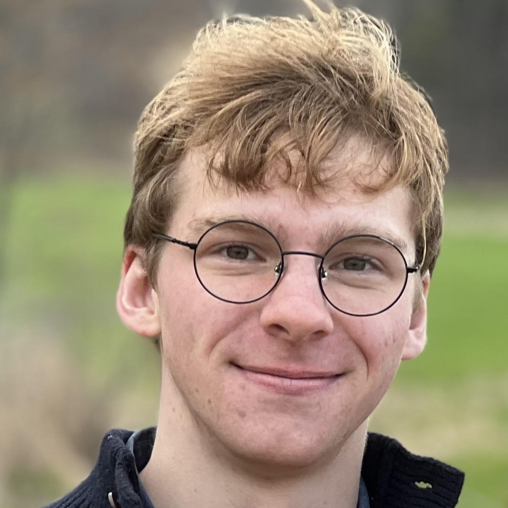
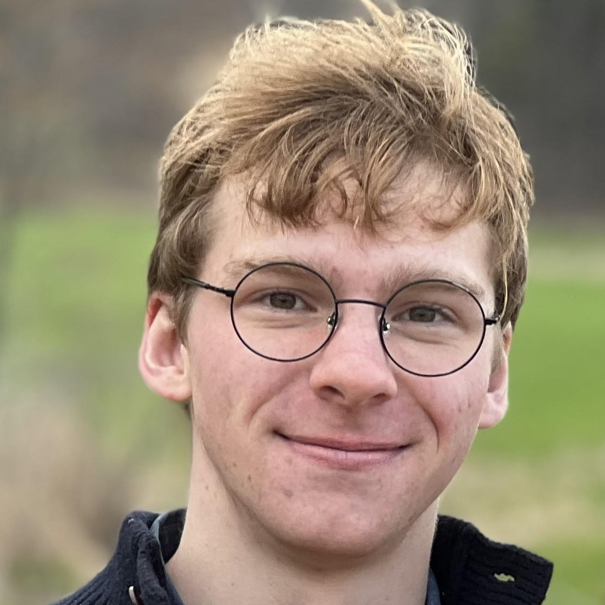

DConf London Part 3
We're at CodeNode in London once again from August 29 – September 1, 2023, for the D Programming Language Conference, sponsored by Symmetry Investments and hosted by the D Language Foundation. This is our third time in London, thanks to Symmetry’s support, and we’re thrilled to be back! DConf ‘22 at CodeNode was a huge success, with overwhelmingly positive feedback from attendees. In fact, it was the best one yet, and we’re committed to making DConf ‘23 even better.
Can't be there in person? No problem! Join our livestreams during the three days of talks and ask questions of the speakers at any time during each session.
DConf is the premier meetup event for the D programming language community. Although we continue to hold regular online meetups, nothing compares to the energy and camaraderie of face-to-face interactions. At DConf, both seasoned veterans and first-time attendees, and many in between, come together for four days of education, knowledge sharing, and fun. We can’t wait to do it all again!
Keynote Speakers

Walter Bright
Creator and Co-maintainer of the D Programming Language
Saeed Sabeti
Director of Organizational Development at Ucora Corporation in Vancouver, Canada

Átila Neves
Co-maintainer of the D Programming Language


 
